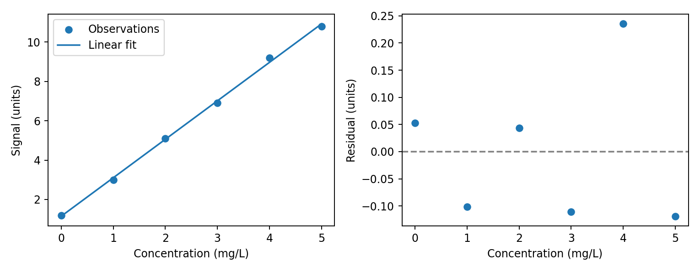
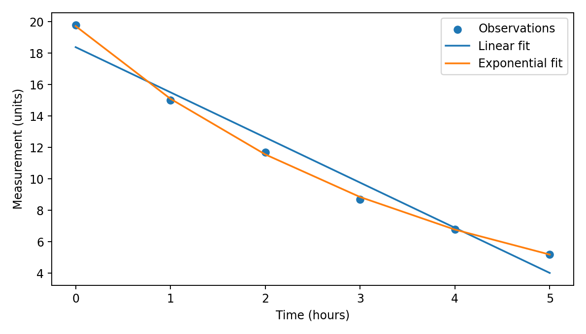
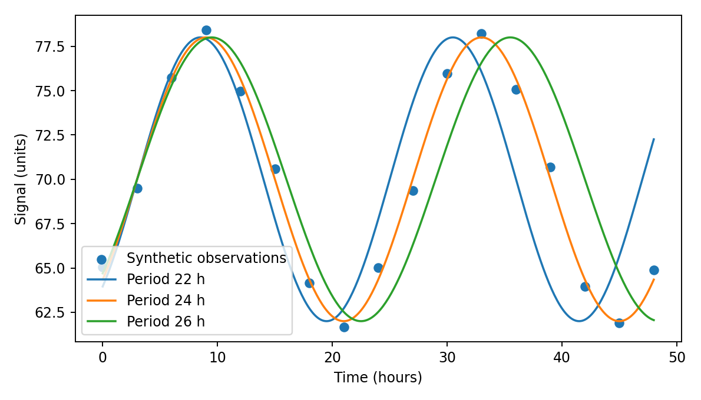
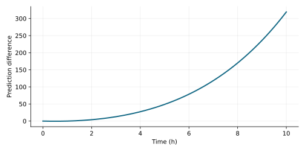

Integrated Mathematical Modeling with R and Python
Opening context: mathematics as a connected toolkit
In the preceding chapters, algebra, functions, geometry, trigonometry, sequences, and limits were developed as distinct topics. Real applications seldom announce which chapter they belong to. Instead, a mathematical modeler identifies a question, selects variables and units, proposes a relationship, estimates parameters, tests assumptions, and communicates a decision. This capstone chapter combines the major tools of precalculus through reproducible investigations in R and Python. All numerical datasets in this chapter are synthetic teaching examples, not clinical evidence.
Learning outcomes
By the end of this chapter, students should be able to: formulate a measurable question; distinguish observations from assumptions; select among linear, quadratic, exponential, periodic, and piecewise models; estimate and interpret parameters; examine residuals and prediction errors; assess model domain and limitations; compare models with meaningful criteria; conduct sensitivity analyses; interpret average rates of change and finite differences; reproduce an analysis in R and Python; and write a defensible modeling conclusion.
How to use this chapter
Work the mathematics by hand before running software. Every
laboratory gives R first, followed by
Python in a separate full-width listing. Run the
standalone files in the code/ch16/ directory to reproduce
the plots in figures/ch16/. The projects intentionally
require interpretation as well as calculation.
The mathematical modeling cycle
A useful modeling workflow has seven stages: (1) articulate the question; (2) define inputs, outputs, and units; (3) examine the data or geometric situation; (4) propose a model and identify assumptions; (5) determine parameters; (6) validate and revise; and (7) communicate conclusions and limitations. Modeling is iterative: an implausible prediction or patterned residual often sends us back to the assumptions. Worked example. A simulated laboratory instrument reports signal \(S\) at concentration \(c\). A first model is \(S(c)=a+bc\). Here \(a\) is the baseline signal, \(b\) is the change in signal per concentration unit, and \(c\) must be restricted to the calibrated range. A numerical value of \(b\) without its units is incomplete. Guided practice. Identify input, output, parameters, units, and one limitation for a model \(H(t)=70+5\sin(2\pi t/24)\), where \(t\) is measured in hours and \(H\) in beats/minute.
Visual investigation.
Draw a flow diagram connecting the seven stages. Mark two feedback arrows: one from residual analysis to model selection and another from interpretation to the original question. Explain why a fitted curve is not automatically a valid scientific explanation.
Units, domains, and dimensional consistency
Units constrain valid equations. A sum requires compatible units; an exponential argument must be dimensionless. In \(C(t)=C_0e^{-kt}\), \(k\) has units of inverse time. In \(d(t)=v_0t+\tfrac12at^2\), both terms have distance units. A model domain is the set of inputs for which the mathematics is defined and the scientific interpretation is meaningful.
Worked example.
A concentration is modeled by \(C(t)=18e^{-0.2t}\) mg/L with \(t\) in hours. Explain why the coefficient \(0.2\) must have units h\(^{-1}\). Calculate \(C(5)=18e^{-1}\approx6.62\) mg/L.
Guided practice.
A model \(P(t)=400(1.08)^t\) uses years. What units does \(t\) have, and why is a prediction for \(t=-100\) unlikely to be meaningful?
Tables, graphs, and initial pattern recognition
A scatterplot is a diagnostic, not a proof. Approximately equal first differences suggest a linear pattern; nearly constant ratios suggest geometric or exponential behavior; regularly repeating peaks suggest periodic behavior. Real measurements rarely follow any pattern exactly. Plotting observations before fitting helps identify outliers, thresholds, and plausible ranges.
Worked example.
For \(t=0,1,2,3\), observations \(y=4,7,10,13\) have successive differences \(3,3,3\). The linear rule \(y=4+3t\) reproduces every value.
Guided practice.
Classify the patterns \(5,10,20,40\) and \(2,6,12,20\) using ratios and first differences. Does either pattern uniquely determine a real-world mechanism?
Visual investigation.
Sketch or graph the model from the worked example. Label axes and units, indicate its meaningful domain, and predict the effect of changing one parameter before calculating new values. Write two observations supported by the graph and one claim the graph alone cannot establish.
Linear calibration and inverse prediction
For a line \(S=a+bc\), two exact calibration points determine \(b=(S_2-S_1)/(c_2-c_1)\) and \(a=S_1-bc_1\). If \(b\ne0\), inverse prediction gives \(c=(S-a)/b\). With noisy data, least squares minimizes \(\sum_i[S_i-(a+bc_i)]^2\). Predictions outside the observed concentration interval are extrapolations and require extra caution.
Worked example.
Signals 2.1 and 8.1 correspond to concentrations 0 and 3. Thus \(b=2\) signal units/(mg/L) and \(a=2.1\). A signal of 6.1 corresponds to \((6.1-2.1)/2=2\) mg/L.
Guided practice.
Using \(S=1.5+0.8c\), estimate \(c\) for \(S=5.1\); state the units and whether the inverse is defined when \(b=0\).
Quadratic models and constrained optimization
Quadratic models \(q(x)=ax^2+bx+c\) describe curvature and may possess an interior optimum. Completing the square gives \(q(x)=a(x+b/(2a))^2+c-b^2/(4a)\), so the vertex occurs at \(x=-b/(2a)\) for \(a\ne0\). In applications, verify that this input lies in the feasible domain; otherwise a boundary may give the relevant optimum.
Worked example.
For \(q(x)=-2x^2+12x+5\) on \(0\le x\le5\), the vertex occurs at \(x=3\) and \(q(3)=23\). Both endpoints give smaller outputs (\(5\) and \(15\)).
Guided practice.
For \(q(x)=-x^2+8x\) on \(0\le x\le3\), find the vertex and the maximum on the actual domain.
Visual investigation.
Sketch or graph the model from the worked example. Label axes and units, indicate its meaningful domain, and predict the effect of changing one parameter before calculating new values. Write two observations supported by the graph and one claim the graph alone cannot establish.
Exponential change, half-life, and doubling time
For constant proportional change, \(Y(t)=Y_0e^{kt}\). If \(k<0\), the half-life is \(\ln2/|k|\); if \(k>0\), doubling time is \(\ln2/k\). A model based on \(Y_0r^t\) can be rewritten with \(k=\ln r\). Distinguish additive change (a fixed increment per time step) from multiplicative change (a fixed proportion per time step).
Worked example.
For \(C(t)=20e^{-0.35t}\), the half-life is \(\ln2/0.35\approx1.98\) hours. This is a mathematical decay model, not a recommendation for medication timing.
Guided practice.
A simulated quantity doubles every 6 days. Find \(k\) in \(Y(t)=Y_0e^{kt}\) and calculate \(Y(12)/Y_0\).
Periodic models and phase interpretation
A periodic model \(y(t)=M+A\sin(\omega(t-\tau))\) has midline \(M\), amplitude \(|A|\), angular frequency \(|\omega|\), period \(T=2\pi/|\omega|\), and horizontal shift \(\tau\) when \(A>0\) and \(\omega>0\). Interpret all parameters in context. A period inferred from short or irregular data may be unstable.
Worked example.
For \(y(t)=70+8\sin(2\pi(t-3)/24)\), the midline is 70, amplitude is 8, and period is 24 hours. At \(t=3\), the model crosses its midline upward.
Guided practice.
Write a cosine model with midline 12, amplitude 4, period 8 hours, and a maximum at \(t=0\).
Visual investigation.
Sketch or graph the model from the worked example. Label axes and units, indicate its meaningful domain, and predict the effect of changing one parameter before calculating new values. Write two observations supported by the graph and one claim the graph alone cannot establish.
Piecewise models and thresholds
Piecewise functions represent systems whose rules change at thresholds. A well-constructed model specifies each interval, endpoint convention, and whether the outputs match at transitions. Discontinuities may represent actual jumps or artifacts of a simplified description. A continuous piecewise function need not have matching slopes at a threshold.
Worked example.
Let \(f(t)=2t+1\) for \(0\le t<3\) and \(f(t)=t+4\) for \(t\ge3\). Both rules approach 7 at \(t=3\), so the model is continuous there.
Guided practice.
Find \(a\) so \(g(t)=3t+2\) for \(t<2\) and \(g(t)=at+4\) for \(t\ge2\) is continuous at \(2\).
Geometric and vector models
A displacement vector \(\mathbf v=\langle v_x,v_y\rangle\) has magnitude \(\|\mathbf v\|=\sqrt{v_x^2+v_y^2}\). Its direction may be represented by an angle using \(\operatorname{atan2}(v_y,v_x)\), which accounts for the quadrant. The dot product \(\mathbf u\cdot\mathbf v\) describes alignment; the projection of \(\mathbf u\) onto nonzero \(\mathbf v\) is \((\mathbf u\cdot\mathbf v/\|\mathbf v\|^2)\mathbf v\).
Worked example.
A displacement of \(\langle3,4\rangle\) km has length 5 km. The unit direction vector is \(\langle3/5,4/5\rangle\).
Guided practice.
A sensor moves 6 m east and 8 m north. Find its net displacement magnitude and direction north of east.
Visual investigation.
Sketch or graph the model from the worked example. Label axes and units, indicate its meaningful domain, and predict the effect of changing one parameter before calculating new values. Write two observations supported by the graph and one claim the graph alone cannot establish.
Parametric trajectories and elimination
Parametric equations \(x=x(t)\) and \(y=y(t)\) describe a curve and its traversal. Eliminating \(t\) can reveal the Cartesian curve but may lose direction or parameter restrictions. For \(x(t)=r\cos t\), \(y(t)=r\sin t\), the path is a circle; the parameter determines its direction and speed of traversal.
Worked example.
For \(x(t)=2t\) and \(y(t)=t^2\) with \(t\ge0\), eliminating \(t\) gives \(y=x^2/4\) with \(x\ge0\). The restriction matters.
Guided practice.
Eliminate \(t\) from \(x(t)=3\cos t\), \(y(t)=2\sin t\) and describe the resulting curve.
Sequences, accumulation, and discrete change
A discrete process can be represented by a recurrence \(x_{n+1}=rx_n+b\). The increment \(x_{n+1}-x_n\) is a finite difference. Cumulative totals are sums, and a geometric accumulation has a closed form when \(r\ne1\). These ideas foreshadow integration and differential equations, but the discrete model is not itself a continuous-time differential equation.
Worked example.
For \(x_{n+1}=0.8x_n+5\), an equilibrium satisfies \(x=0.8x+5\), giving \(x=25\). Starting from \(x_0=0\), the first three terms are \(0,5,9\).
Guided practice.
For \(x_{n+1}=0.9x_n+2\), calculate the equilibrium and the first four values when \(x_0=10\).
Visual investigation.
Sketch or graph the model from the worked example. Label axes and units, indicate its meaningful domain, and predict the effect of changing one parameter before calculating new values. Write two observations supported by the graph and one claim the graph alone cannot establish.
Residuals and measures of fit
A residual is \(e_i=y_i-\widehat y_i\). Plot residuals against time or fitted values to detect curvature, systematic drift, changing variability, or outliers. Mean absolute error is \(\mathrm{MAE}=n^{-1}\sum_i|e_i|\) and root mean squared error is \(\mathrm{RMSE}=\sqrt{n^{-1}\sum_i e_i^2}\). RMSE weights large errors more heavily. Neither metric alone establishes causal validity.
Worked example.
For observations \(4,6,8\) and predictions \(5,5,8\), residuals are \(-1,1,0\), MAE is \(2/3\), and RMSE is \(\sqrt{2/3}\approx0.816\).
Guided practice.
Compute MAE and RMSE for residuals \(2,-2,1,-1\). Which is larger, and why?
Training, validation, and overfitting
A model can match observed data closely yet predict new observations poorly. Use separate fitting and validation data where possible. Compare errors on held-out observations, not just on the points used to estimate parameters. More parameters increase flexibility but may capture random noise rather than a stable pattern. For small synthetic datasets, describe the split and its limitations explicitly.
Worked example.
A degree-4 polynomial passes through five calibration observations exactly. Its training residuals are zero, but this does not imply accurate prediction between or beyond those points.
Guided practice.
Explain why a model with lower training RMSE might still be less suitable than a simpler model for future predictions.
Visual investigation.
Sketch or graph the model from the worked example. Label axes and units, indicate its meaningful domain, and predict the effect of changing one parameter before calculating new values. Write two observations supported by the graph and one claim the graph alone cannot establish.
Sensitivity and uncertainty
Sensitivity measures how a prediction changes when inputs or parameters vary. For \(Y=ab\), small relative perturbations approximately add: \(\Delta Y/Y\approx\Delta a/a+\Delta b/b\) when changes are small. A scenario analysis recalculates predictions under plausible parameter values; it is not automatically a statistical confidence interval. State whether uncertainty concerns measurement, parameters, or model structure.
Worked example.
For \(C(t)=20e^{-kt}\) at \(t=4\), predictions are approximately \(9.0\) when \(k=0.20\) and \(7.4\) when \(k=0.25\). The predicted concentration is sensitive to the decay constant.
Guided practice.
Calculate \(C(5)\) for \(C(t)=10e^{-kt}\) at \(k=0.1,0.15,0.2\). Explain the trend.
Average rates and the calculus bridge
The average rate of change on \([a,b]\) is \([f(b)-f(a)]/(b-a)\). The difference quotient \([f(a+h)-f(a)]/h\) approaches the instantaneous rate when its limit exists. Numerical secants connect directly to derivative ideas, while finite sums connect to accumulation. A smooth fitted curve does not make numerical derivatives immune to measurement noise.
Worked example.
For \(f(t)=t^2+2t\), \([f(a+h)-f(a)]/h=2a+h+2\). As \(h\to0\), the limiting rate is \(2a+2\). At \(a=3\), it equals 8 output units per input unit.
Guided practice.
Find the difference quotient for \(f(t)=3t^2-t\) and use it to estimate the instantaneous rate at \(t=2\).
Visual investigation.
Sketch or graph the model from the worked example. Label axes and units, indicate its meaningful domain, and predict the effect of changing one parameter before calculating new values. Write two observations supported by the graph and one claim the graph alone cannot establish.
Communicating a mathematical model
A responsible modeling report contains the question, data provenance, variables and units, model equation, parameter interpretation, fit diagnostics, range of applicability, limitations, and a conclusion answering the original question. Distinguish measured data, modeled predictions, and hypothetical scenarios. Avoid causal language when the analysis supports only association or pattern description.
Worked example.
A report should not merely say “the model fits well.” Instead: “On the six simulated calibration observations, the fitted linear model has RMSE 0.12 signal units; predictions should be limited to the observed concentration range until independently validated.
Guided practice.
Write a three-sentence conclusion for a periodic model that predicts a 24-hour cycle but has increasing residuals toward the end of the observation window.
A reproducible analysis workflow
Each laboratory follows the same protocol: state a question, inspect observations, derive or select a model, execute code, interpret outputs, examine limitations, and record an answer in mathematical language. The code files provided with this chapter are self-contained and use only base R or common Python scientific packages (NumPy and Matplotlib).
Computational Laboratory A: Calibration and residual diagnostics
Question. Can a linear model describe simulated signal measurements across a calibration range? Use concentrations \(c=(0,1,2,3,4,5)\) mg/L and signals \(S=(1.2,3.0,5.1,6.9,9.2,10.8)\) arbitrary units. Estimate the least-squares slope and intercept; plot observations and fitted line; calculate residuals and RMSE. Interpret the intercept and slope, and explain why predictions beyond 5 mg/L require caution.
R code
# Laboratory A: linear calibration and residuals
concentration <- 0:5
signal <- c(1.2, 3.0, 5.1, 6.9, 9.2, 10.8)
fit <- lm(signal ~ concentration)
prediction <- predict(fit)
residual <- signal - prediction
rmse <- sqrt(mean(residual^2))
print(coef(fit)); print(rmse)
par(mfrow=c(1,2))
plot(concentration, signal, xlab="Concentration (mg/L)", ylab="Signal (units)")
abline(fit, col="blue")
plot(concentration, residual, xlab="Concentration (mg/L)", ylab="Residual")
abline(h=0, lty=2)
par(mfrow=c(1,1))Python code
import numpy as np
import matplotlib.pyplot as plt
c = np.arange(6, dtype=float)
y = np.array([1.2,3.0,5.1,6.9,9.2,10.8])
b, a = np.polyfit(c,y,1)
pred = a+b*c
res = y-pred
rmse = np.sqrt(np.mean(res**2))
print(f"Intercept={a:.4f}; slope={b:.4f}; RMSE={rmse:.4f}")
fig, axes = plt.subplots(1,2,figsize=(9,3.5))
axes[0].scatter(c,y,label="Observations")
axes[0].plot(c,pred,label="Linear fit")
axes[0].set(xlabel="Concentration (mg/L)",ylabel="Signal (units)")
axes[0].legend()
axes[1].scatter(c,res)
axes[1].axhline(0,linestyle="--",color="gray")
axes[1].set(xlabel="Concentration (mg/L)",ylabel="Residual (units)")
fig.tight_layout()
fig.savefig("figures/labA_python.png",dpi=170)
plt.close(fig)
Interpretation prompts. (1) What is the unit of the fitted slope? (2) Is the intercept scientifically meaningful? (3) Are residuals distributed without a clear pattern? (4) How would one unusually large residual change RMSE?
Computational Laboratory B: Exponential versus linear models
Question. Which simple model better describes a simulated decreasing measurement? At times \(t=(0,1,2,3,4,5)\) hours, let \(y=(19.8,15.0,11.7,8.7,6.8,5.2)\) units. Fit a linear model \(y=a+bt\) and an exponential model \(y=Ae^{kt}\) using a least-squares line on \(\log y\). Compare predictions and RMSE on the original measurement scale. Explain why this is a descriptive comparison rather than a clinical recommendation.
R code
# Laboratory B: compare linear and exponential models
time <- 0:5
y <- c(19.8,15.0,11.7,8.7,6.8,5.2)
linear_fit <- lm(y ~ time)
exp_fit <- lm(log(y) ~ time)
linear_pred <- predict(linear_fit)
exp_pred <- exp(predict(exp_fit))
rmse <- function(actual, predicted) sqrt(mean((actual-predicted)^2))
print(c(linear=rmse(y,linear_pred), exponential=rmse(y,exp_pred)))
plot(time,y,xlab="Time (hours)",ylab="Measurement (units)")
lines(time,linear_pred,col="blue")
lines(time,exp_pred,col="red")
legend("topright",legend=c("Linear","Exponential"),col=c("blue","red"),lty=1)Python code
import numpy as np
import matplotlib.pyplot as plt
t = np.arange(6,dtype=float)
y = np.array([19.8,15.0,11.7,8.7,6.8,5.2])
b, a = np.polyfit(t,y,1)
k, logA = np.polyfit(t,np.log(y),1)
linear = a+b*t
expo = np.exp(logA+k*t)
rmse = lambda z: np.sqrt(np.mean((y-z)**2))
print(f"Linear RMSE={rmse(linear):.4f}")
print(f"Exponential A={np.exp(logA):.4f}, k={k:.4f}, RMSE={rmse(expo):.4f}")
plt.figure(figsize=(7,4))
plt.scatter(t,y,label="Observations")
plt.plot(t,linear,label="Linear fit")
plt.plot(t,expo,label="Exponential fit")
plt.xlabel("Time (hours)")
plt.ylabel("Measurement (units)")
plt.legend()
plt.tight_layout()
plt.savefig("figures/labB_python.png",dpi=170)
plt.close()
Interpretation prompts. (1) Why must all \(y\) values be positive to fit the log-transformed model? (2) Why compare RMSE on the original scale? (3) What changes if the final observation is removed? (4) How might measurement error alter the preferred model?
Computational Laboratory C: Periodic signals and sensitivity
Question. A simulated sensor follows \(y(t)=70+8\sin(2\pi(t-3)/24)\) with small deterministic measurement perturbations. Plot the observations and the proposed curve, calculate residuals, and compare predicted values when the period is 22, 24, or 26 hours. Discuss why an assumed period should be validated using observations over multiple cycles.
R code
# Laboratory C: periodic model sensitivity
time <- seq(0,48,by=3)
y <- 70+8*sin(2*pi*(time-3)/24)+0.7*cos(0.8*time)
nominal <- 70+8*sin(2*pi*(time-3)/24)
print(sqrt(mean((y-nominal)^2)))
plot(time,y,xlab="Time (hours)",ylab="Signal (units)",ylim=c(60,80))
dense <- seq(0,48,length.out=400)
for (period in c(22,24,26)) {
lines(dense,70+8*sin(2*pi*(dense-3)/period),lty=which(c(22,24,26)==period))
}
legend("topright",legend=c("22 h","24 h","26 h"),lty=1:3)Python code
import numpy as np
import matplotlib.pyplot as plt
t = np.arange(0,49,3,dtype=float)
y = 70+8*np.sin(2*np.pi*(t-3)/24)+0.7*np.cos(0.8*t)
plt.figure(figsize=(7,4))
plt.scatter(t,y,label="Synthetic observations")
for period in [22,24,26]:
dense = np.linspace(0,48,400)
model = 70+8*np.sin(2*np.pi*(dense-3)/period)
plt.plot(dense,model,label=f"Period {period} h")
res = y-(70+8*np.sin(2*np.pi*(t-3)/24))
print(f"Nominal-period RMSE={np.sqrt(np.mean(res**2)):.4f}")
plt.xlabel("Time (hours)")
plt.ylabel("Signal (units)")
plt.legend()
plt.tight_layout()
plt.savefig("figures/labC_python.png",dpi=170)
plt.close()
Interpretation prompts. (1) State the amplitude, midline, and nominal period. (2) Identify where the curves differ most. (3) Explain the difference between deterministic perturbations and random sampling uncertainty.
Integrated applied workshops
Project 1: Laboratory calibration and inverse estimation
A simulated instrument records concentration (mg/L) and signal (units): \((0,1.0),(1,2.9),(2,5.2),(3,6.8),(4,9.1),(5,11.0)\). (a) Plot the points. (b) Derive a two-point calibration equation using the first and last observations. (c) Fit a least-squares line using software. (d) Estimate concentration when the signal is 7.5. (e) Calculate residuals and RMSE for both models. (f) Explain why the inverse estimate should be restricted to the calibrated range. (g) Refit after changing the final signal from 11.0 to 12.0 and compare the inverse estimate.
Guided reasoning. First compute the two-point slope \((11-1)/5=2\) and intercept 1; then calculate the two-point inverse \((7.5-1)/2=3.25\) mg/L. Next use software for the least-squares fit and explain any difference.
Extension. Explain why a calibration equation does not establish that the instrument is accurate without independent reference measurements.
Project 2: Repeated measurements and decay
A hypothetical concentration is modeled as \(C(t)=24e^{-0.28t}\) mg/L. (a) Calculate \(C(0),C(2),C(4),C(6)\). (b) Find the half-life algebraically. (c) Find when the model first reaches 5 mg/L. (d) Compute average rates on \([0,2]\) and \([4,6]\). (e) Evaluate predictions for \(k=0.25,0.28,0.31\) at \(t=6\). (f) Explain why the model cannot by itself determine safe dosing or clinical decisions.
Guided reasoning. Solving \(24e^{-0.28t}=5\) gives \(t=\ln(24/5)/0.28\approx5.60\) hours. The half-life is \(\ln2/0.28\approx2.48\) hours.
Extension. Contrast a continuous exponential model with a recurrence \(C_{n+1}=rC_n\) measured once per hour.
Project 3: A periodic environmental or physiological signal
Consider \(H(t)=68+7\cos(2\pi(t-2)/24)\), where \(t\) is hours. (a) Identify midline, amplitude, period, and phase shift. (b) Determine the maximum and minimum predicted values and when they occur in one day. (c) Solve \(H(t)=68\) on \(0\le t<24\). (d) Plot the function and label extrema. (e) Compare it with \(68+7\cos(2\pi(t-2)/22)\). (f) Discuss why a single-day observation may be insufficient to establish a 24-hour rhythm.
Guided reasoning. The maximum is 75 at \(t=2\); the minimum is 61 at \(t=14\). Midline crossings occur when the cosine is zero.
Extension. Propose a residual diagnostic that could reveal an incorrect period.
Project 4: Geometry, navigation, and measurement
A mobile sensor moves from \((0,0)\) to \((6,8)\) meters and then to \((10,5)\) meters. (a) Find both displacement vectors. (b) Find the total path length and net displacement magnitude. (c) Determine the direction of the net displacement. (d) Give a parametric equation for each straight segment. (e) Explain why path length and displacement differ. (f) If each recorded coordinate can vary by \(\pm0.2\) m, examine at least four endpoint scenarios.
Guided reasoning. The first segment has length 10 m and the second has length 5 m; total path length is 15 m. Net displacement is \(\langle10,5\rangle\) m, with magnitude \(\sqrt{125}\approx11.18\) m.
Extension. Sketch a path with the same endpoints but a different total distance.
Project 5: Discrete accumulation and calculus readiness
A simplified inventory follows \(I_{n+1}=0.85I_n+12\) with \(I_0=20\). (a) Compute \(I_1\) through \(I_6\). (b) Find the equilibrium. (c) Explain whether the values move toward or away from equilibrium. (d) Derive \(I_n=80+(20-80)(0.85)^n\). (e) Calculate the accumulated total \(\sum_{n=0}^{5}I_n\). (f) Compare the finite differences \(I_{n+1}-I_n\) with the derivative of the continuous interpolation \(I(t)=80-60(0.85)^t\).
Guided reasoning. At equilibrium, \(I=0.85I+12\), so \(I=80\). Subtract 80 from the recurrence to reveal a geometric pattern.
Extension. Explain why a discrete difference is not identical to an instantaneous derivative.
Problem-solving clinic: choosing a model
Scenario A. Data show nearly equal increases over equal time intervals. Begin with a linear model, then inspect residuals for curvature.
Scenario B. Positive data have nearly constant ratios. Begin with an exponential model; compare errors on the original scale.
Scenario C. Measurements repeat with approximately regular peaks. Explore a periodic model and check whether the estimated period remains stable across cycles.
Scenario D. The process changes rules after a threshold. Use a piecewise model and explicitly check continuity and units at the transition.
Scenario E. Position is recorded as horizontal and vertical coordinates. Use vectors or parametric equations; distinguish trajectory from displacement.
Guided studio. For each scenario, sketch a plausible graph, write a candidate equation, identify at least two parameters, and name one diagnostic that might reveal model failure.
Chapter review exercises
Foundations and representation.
Identify the input, output, and units for \(S(c)=1.2+2.1c\).
Explain why \(e^{-kt}\) requires a dimensionless exponent.
Classify \(3,7,11,15,\ldots\) as an arithmetic or geometric sequence.
Classify \(2,6,18,54,\ldots\) and write an explicit rule.
Find the slope and intercept through \((1,4)\) and \((5,12)\).
Invert \(y=3+0.5x\) and state any parameter restriction.
Find the vertex of \(q(x)=-x^2+6x+2\).
Find the maximum of that quadratic on \(0\le x\le2\).
Calculate the half-life for \(C(t)=10e^{-0.4t}\).
Find the doubling time for \(P(t)=100e^{0.12t}\).
Identify amplitude and period of \(4+3\sin(\pi t/6)\).
Construct a cosine function with amplitude 5 and period 10.
Find \(a\) to make a two-piece function \(2x+1\) for \(x<3\) and \(ax-2\) for \(x\ge3\) continuous.
Compute \(\|\langle-5,12\rangle\|\).
Compute \(\langle2,3\rangle\cdot\langle4,-1\rangle\).
Eliminate \(t\) from \(x=2t\), \(y=3t+1\).
Find the equilibrium of \(x_{n+1}=0.75x_n+10\).
Calculate the first four values when \(x_0=0\) for the preceding recurrence.
Compute MAE for residuals \(-2,0,1,3\).
Compute RMSE for the same residuals.
Explain why low training error does not guarantee predictive accuracy.
Describe two limitations of extrapolating a calibration curve.
Calculate the average rate of change of \(f(t)=t^2\) on \([1,4]\).
Simplify the difference quotient for \(f(t)=2t^2+t\).
Find the limiting rate at \(t=3\) from the preceding quotient.
Explain why a periodic model based on one cycle may be unreliable.
Compare the interpretations of a slope and an exponential decay constant.
Distinguish a residual from a measurement error.
Explain why scenario ranges are not necessarily confidence intervals.
Explain the difference between total path length and net displacement.
For \(y=20e^{-0.2t}\), solve for the time at which \(y=8\).
Find \(\sum_{n=0}^{4}2(1.5)^n\).
Give one example of a physical domain restriction not required by algebra.
Propose a diagnostic for an incorrectly specified quadratic model.
Write a short model conclusion that reports a parameter, units, and a limitation.
Explain why a more complicated polynomial can fit training data yet predict poorly.
Calculate the magnitude of \(\langle6,8\rangle\) and its unit direction.
Find the mean of the outputs \(4,7,9,12\) and describe its units.
For \(f(t)=|t-2|\), explain why the instantaneous rate fails at \(t=2\).
Outline a seven-step modeling workflow for a new dataset.
Calculus-readiness checkpoint
For \(f(x)=x^2+4x\), simplify \([f(a+h)-f(a)]/h\) for \(h\ne0\), then determine its limit as \(h\to0\).
For \(C(t)=12e^{-0.3t}\), compare the average rate over \([0,2]\) with the limiting instantaneous rate at \(t=0\). Explain the difference in words.
Explain how a sum of small rectangular contributions can approximate total accumulation. Why does using narrower intervals often improve an approximation for a smooth function?
A parametric trajectory is \(x(t)=t\), \(y(t)=t^2\). Estimate the tangent slope at \(t=2\) using secants. Compare your result with the Cartesian curve.
Identify which ideas in this chapter prepare you for derivatives, definite integrals, and multivariable geometry.
Extended application: Comparing two growth models
Two candidate models predict a synthetic culture count: a linear model \(100+20t\) and an exponential model \(100(1.2)^t\). The quantities in this investigation are illustrative rather than measured observations.
Formulating the mathematical model
The proposed relationship is \[D(t)=100(1.2)^t-(100+20t).\] Before calculating, identify the input and output, their units, and the interval on which the model is being studied. Distinguish the mathematical domain from the practical domain. The numerical study uses inputs from \(0\) to \(10\).
Example 1: Analytical investigation. Compare predictions at times 0, 1 and 5. Explain why agreement at two times does not establish equivalence or validate either model.
Worked solution. Differences at 0 and 1 are zero; at 5 the exponential predicts 248.832 versus 200, a difference of 48.832. Independent observations are needed.
Connecting numerical and graphical representations
| Time (h) | Prediction difference |
|---|---|
| 0 | 0 |
| 2.5 | 7.744 |
| 5 | 48.83 |
| 7.5 | 142.5 |
| 10 | 319.2 |

Interpretation. Compare the tabulated values with the graph. Identify the intervals over which the output increases or decreases, and distinguish a sampled extremum from an exact analytical extremum. Explain whether interpolation and extrapolation have the same justification in this setting.
R implementation
The following standalone script defines the model, generates predictions, and draws a labeled graph. Read the formula before running the code. The sampled range is a numerical diagnostic, not a proof of the exact range.
# Applied investigation: Comparing two growth models
# 1. Define the input domain and model
x <- seq(0, 10, length.out = 301)
y <- 100*1.2^x-(100+20*x)
# 2. Inspect numerical predictions
idx <- unique(round(seq(1, length(x), length.out = 5)))
print(data.frame(input = x[idx], output = y[idx]))
# 3. Visualize the model with labeled axes
plot(x, y, type = "l", lwd = 2, col = "#176B87",
xlab = "Time (h)", ylab = "Prediction difference")
grid()
# 4. Check the sampled output range
print(range(y))Python implementation
Repeat the same investigation using NumPy arrays and Matplotlib. Compare the printed predictions with the R output, allowing for rounding.
# Applied investigation: Comparing two growth models
import numpy as np
import matplotlib.pyplot as plt
# 1. Define the input domain and model
x = np.linspace(0, 10, 301)
y = 100*1.2**x-(100+20*x)
# 2. Inspect numerical predictions
idx = np.unique(np.linspace(0, len(x)-1, 5).round().astype(int))
print(np.column_stack((x[idx], y[idx])))
# 3. Visualize the model with labeled axes
fig, ax = plt.subplots(figsize=(7, 3.6))
ax.plot(x, y, "-", color="#176B87", linewidth=2)
ax.set(xlabel="Time (h)", ylabel="Prediction difference")
ax.grid(alpha=0.22)
ax.spines[["top", "right"]].set_visible(False)
fig.tight_layout()
plt.show()
# 4. Check the sampled output range
print(np.min(y), np.max(y))Guided practice: checking the model
Calculate the outputs at the two endpoints by hand. Compare them with the numerical table.
Select an interior input not listed in the table. Predict the output before evaluating it in either language.
Explain the meaning of the difference between the two endpoint outputs, including units. If appropriate, calculate the average rate of change.
Identify a physical assumption of the model and describe a circumstance in which it would fail.
Chapter project: investigating Comparing two growth models
Prepare a short technical report for a reader who has not studied the model. Use the preceding case as a starting point, but develop your own investigation rather than merely reproducing the worked example.
State a quantitative question that can be answered using the model. Define all variables, units, and restrictions.
Modify one meaningful numerical parameter in the formula. Explain what the change represents in the original context. Derive the revised formula and predict the direction of change before computing.
Compare the original and revised models at five common admissible inputs. Present a labeled table and explain the largest difference in the table.
Produce a graph containing both models on the same axes. Use a legend and distinguish the curves with line styles or markers. Explain the shape and any intersections.
Solve your quantitative question algebraically where possible. Verify the result using R and Python; report any differences due to numerical precision.
Discuss at least two limitations. Describe what measurements would be needed to assess the model in practice. Do not present simulated predictions as empirical evidence.
Project deliverables and assessment
Submit a two- to three-page report, the two runnable scripts, and the labeled figure. The report should stand on its own without requiring the reader to inspect the code.
| Criterion | Points |
|---|---|
| Mathematical formulation and domain | 20 |
| Analytical reasoning and verification | 25 |
| Reproducible R and Python computations | 20 |
| Graph and table quality | 15 |
| Interpretation and limitations | 20 |
| Total | 100 |
Chapter summary
A defensible model connects mathematics with a clearly stated question. Algebra establishes relationships, graphs expose structure, computation estimates parameters, residuals challenge assumptions, and sensitivity analysis tests stability. The transition to calculus arises naturally when average changes become instantaneous rates and discrete sums approximate continuous accumulation. The most important habit is not choosing the most elaborate formula: it is explaining what the model means, where it works, and where it may fail.
Companion scripts
Interactive investigation: Comparing growth models
Enable JavaScript to explore the model.
Explore and explain: Compare predictions at early and late times. Discuss which model is appropriate for a real dataset.